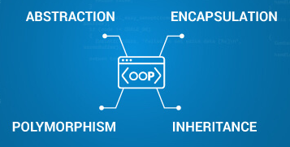
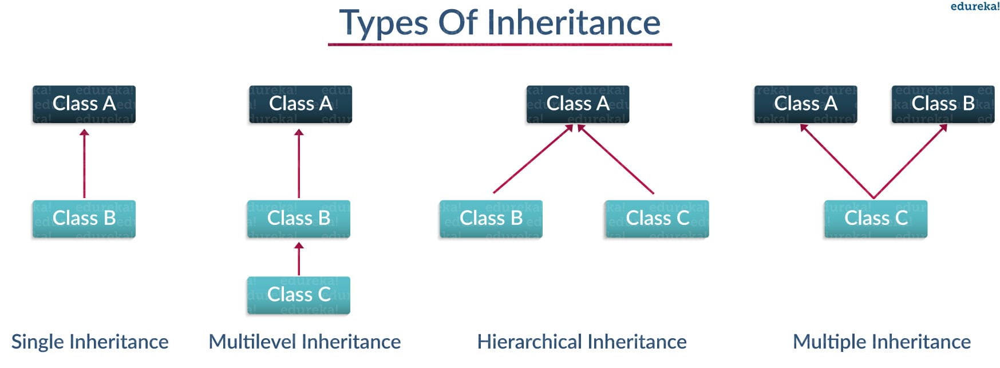
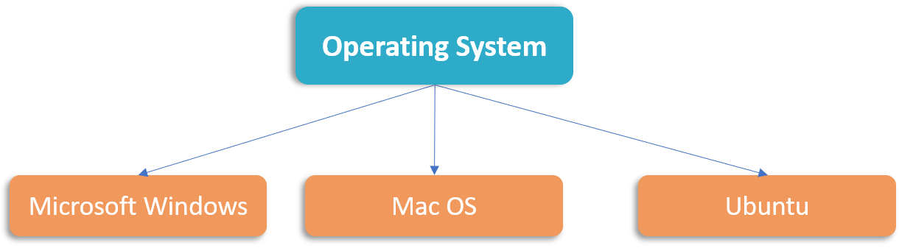

What is Object-Oriented Programing?
The term “Object-Oriented Programming” (OOP) was coined by Alan Kay around 1966 while he was at grad school. The language called Simula was the first programming language with the features of Object-oriented programming. It was developed in 1967 for making simulation programs, in which the most important information was called objects. OOPs has been adapted by various programming languages including Python Today its application is in almost every field such as Real-time systems, Artificial intelligence, and expert systems, Client-server systems, Object-oriented databases, and many more. The goal of Object-Oriented Programming (OOP) is to create "objects." An object is a collection of variables and functions that are linked together. These variables are frequently referred to as object attributes, and functions are referred to as object behavior. These items provide the software a more organized and logical structure.
For example, a car is an object. If we consider the car as an object, its properties include its color,
model, price, and brand, among others. Acceleration, slowing down, and changing gears would be its
behavior/function. Object-Oriented programming is famous because it implements the real-world entities
like objects, hiding, inheritance, etc in programming. It makes visualization easier because it is close
to real-world scenarios. Major OOP (object-oriented programming) concepts in Python include Class, Object, Method, Inheritance, Polymorphism, Data Abstraction, and Encapsulation. Let’s learn about each one of them with examples.
Classes & Objects:
A class is a collection of objects. Unlike the primitive data structures, classes are data structures that the user defines. They make the code more manageable. In python, we declare a class with the keyword "class" followed by class name and semicolon. Only the object's description or blueprint is created when we define a class. There will be no memory allocation until the object is created. Real data or information is stored in the objector instance. The term "instantiation" refers to the process of producing a new object or instance of a class. Let's see a calculator class as example:
""" This is the calculator program"""
from calc.historyMod.history import History
class Calculator:
""" This is the Calculator class"""
history = []
@staticmethod
def add_number(tuple_values: tuple):
""" adds number to result"""
# create an addition object using the factory we created on the calculation class
History.add_addition_calculation(tuple_values)
return True
@staticmethod
def subtract_number(tuple_values: tuple):
""" subtract number from result"""
History.add_subtraction_calculation(tuple_values)
return True
Here we could see a class with different methods on it. Methods are the functions that we used to describe the behavior of the objects. Now, there are four fundamental concepts of Object-oriented programming – Inheritance, Encapsulation, Polymorphism, and Data abstraction. We will have a look how these principles are depicted in calculator class.
Encapsulation
In the above calculator code we could see that an object of History class is used to get the historical data. After the addition or subtraction operation the values are sent to the History class by using the methods in the History class using history object. Encapsulation is a way to ensure security. Basically, it hides the data from the access of outsiders. In the above program we have provided all variables as public, so that it will be available everywhere outside the class, if they imported the History class. If we need to actually prevent the access of attributes/methods from outside the scope of a class, you can use “private members“. In order to declare the attributes/method as private members, use double underscore ( __ ) in the prefix. Such as – self.__name or def __method(); If we declare the variables and methods as protected, then the attribute and method are protected and should not be used outside the access of the class and sub-classes but can be accessed by class methods and objects. In our Calculator project we use encapsulation in all of our classes. For example, our Calculator class encapsulates the add, subtract, multiply and divide methods. There are getter and setter methods that can be used to get and set any private attributes respectively if it is required to change the private attributes as part of the business requirement. This allows us to keep a track of who is changing/setting the private attribute newly further allowing us to backtrack and resolve issues, if any. In the example given, we have used a getter method which will get the actual attribute’s value from the protected attribute.
class Calculation:
"""Calculation class"""
def __init__(self, values: tuple):
""" constructor method"""
self.values = Calculation.convert_args_to_tuple_of_float(values)
@classmethod
def create(cls, values: tuple):
""" factory method"""
return cls(values)
@staticmethod
def convert_args_to_tuple_of_float(values):
""" standardize values to list of floats"""
list_values_float = []
for item in values:
list_values_float.append(float(item))
return tuple(list_values_float)
Inheritance
Inheritance is the procedure in which one class inherits the attributes and methods of another class.
The class whose properties and methods are inherited is known as Parent class. The class that inherits the
properties from the parent class is the Child class. Along with the inherited properties and methods, a child
class can have its own properties and methods.
Different types of Inheritance are as follows:
Single inheritance: Single level inheritance enables a derived class to inherit characteristics from a
single parent class.
Multilevel Inheritance : Multi-level inheritance enables a derived class to inherit properties from an
immediate parent class which in turn inherits properties from its parent class (in a manner like,
child→parent→grandparent).
Hierarchical Inheritance: Hierarchical level inheritance enables more than one derived class to inherit
properties from a parent class.
Multiple Inheritance: Multiple level inheritance enables one derived class to inherit properties from
more than one base class.

We can have a look into the Addition class as an example of
Inheritance. Calculation is the base class of addition which is extended by Addition.
from calc.calculation.calculation import Calculation
class Addition(Calculation):
"""Addition class"""
def get_result(self):
""" addition """
total_sum = 0.0
for value in self.values:
total_sum += value
return total_sum
On extending the calculation class all the methods in it will be accessible for the Addition class. In our Calculator project we have a parent class Calculation that has a tuple “values” and a method to convert “values” to a list of floats. We then have Addition, Subtraction, Multiply and Divide classes that inherit Calculation so that they can use Calculation's members. After inheriting from the Calculation, the children only need to implement a “get_result” function, which needs to be different for each of the operations performed by the children.
Polymorphism
Polymorphism means having many forms. In OOP it refers to the functions having the same names but
carrying different functionalities. One example of this is python's “print” method. For example,
the print method has custom implementations for integers, strings, lists. You don't need to be
concerned with letting the function know what type of data is being printed.

The base class ‘Calculation’ defines a method skeleton for get_result() which the child classes
inherit and re-defines them according to their requirement. The ‘Multiplication’ and "Division'
classes redefines it to multiply and divide all the numbers it receives in a list and returns the
result of the numbers. In the same manner, all the other child classes inherit the properties of
base class and molds/re-defines the get_result() method to satisfy their requirements. For
polymorphism to occur, there has to be inheritance between classes.
Abstraction
We use Abstraction for hiding the internal details or implementations of a function and showing
its functionalities only. This is similar to the way you know how to drive a car without knowing
the background mechanism. Any class with at least one abstract function is an abstract class.
In order to create an abstraction class first, you need to import ABC class from abc module. This
lets you create abstract methods inside it. ABC stands for Abstract Base Class.
We cannot create an object for the abstract class with the abstract method. Abstraction can be
done via Inheritance only.

In our Calculator project, we can instantiate an Addition object, pass it the list of values, do
the calculation and get the result by writing the following code.
from abc import ABC, abstractmethod
class Calculation(ABC):
""" calculation abstract base class"""
def __init__(self,values: tuple):
""" constructor method"""
self._values = Calculation.convert_args_to_list_float(values)
class Addition(Calculation):
""" calculation addition class"""
def get_result(self):
"""returns the addition result"""
return sum(self.values)